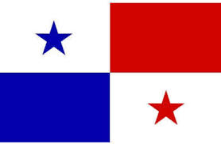
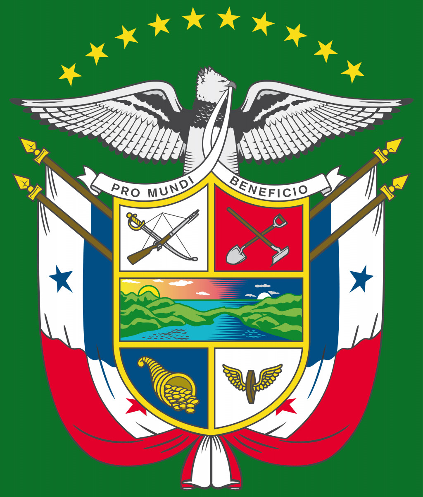
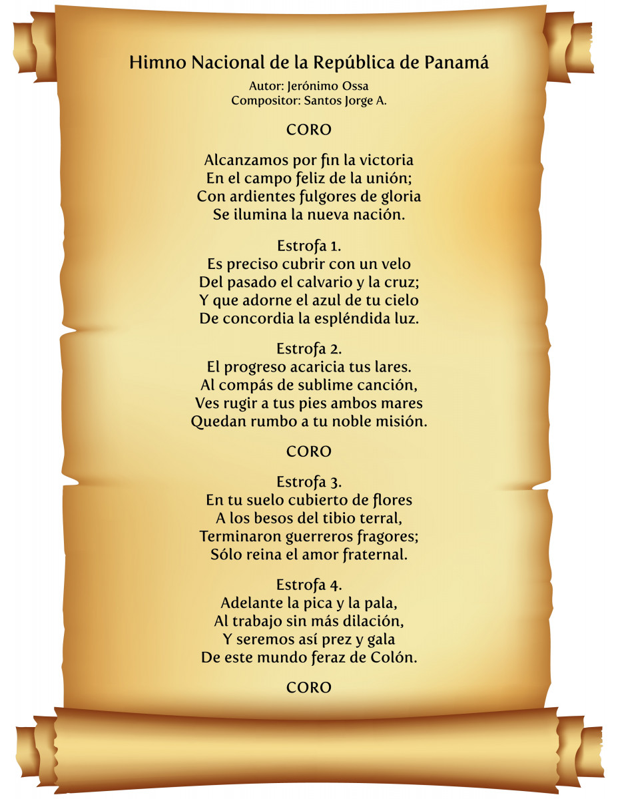
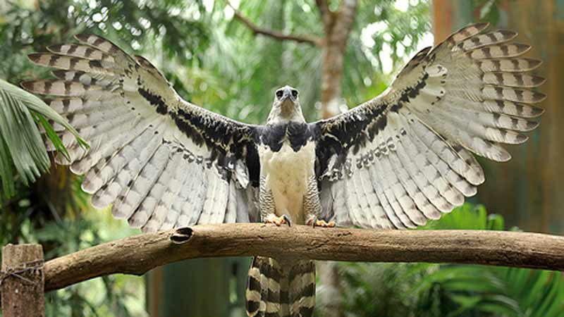

Bienvenido a nuestra página sobre Panama
Panamá, oficialmente República de Panamá, es un país ubicado en América Central. Su capital y ciudad más poblada es la Ciudad de Panamá. limita al norte con el mar Caribe, al sur con el océano Pacífico, al este con Colombia y al oeste con Costa Rica. Tiene una extensión de 75 517 km².Localizado en el istmo del mismo nombre, franja que une a América del Sur con América Central, su territorio montañoso solamente es interrumpido por la cuenca del canal de Panamá, la vía interoceánica que une al océano Atlántico con el Pacífico. Su condición de país de tránsito lo convirtió tempranamente en un punto de encuentro de culturas provenientes de todo el mundo. El país es el escenario geográfico del canal de Panamá, obra que facilita la comunicación entre las costas de los océanos Atlántico y Pacífico; y que influye significativamente en el comercio mundial. Su población en 2020 ascendía a 4 279 000 habitantes. Al ser un país mayoritariamente católico, el 9 de septiembre del 2000, Año Santo Jubilar, la Conferencia Episcopal Panameña proclama oficialmente a Santa María La Antigua como Patrona de la República de Panamá. Políticamente, su territorio está constituido por diez provincias y por seis comarcas indígenas desde el año 2020. De acuerdo con la Constitución Política de la República de Panamá, el español es la lengua oficial del país y todos los panameños tienen el deber de conocerla y el derecho a usarla. En 2006, era la lengua materna del 93.1 % de los panameños.17 Otras lenguas, también panameñas, son reconocidas en el sistema educativo en diversas comunidades, donde la población indígena es mayoritaria. Gracias a su posición geográfica, actualmente ofrece al mundo una amplia plataforma de servicios marítimos, comerciales, inmobiliarios y financieros, entre ellos la Zona Libre de Colón, la zona franca más grande del continente y la segunda del mundo. Con una población superior a los cuatro millones de habitantes, tiene una posición privilegiada en varias clasificaciones de desarrollo en América Latina, ocupando el cuarto lugar más alto de crecimiento en América Latina según el índice de desarrollo humano 2019. Asimismo, Panamá es el tercer país latinoamericano más competitivo según el Foro Económico Mundial, es el país de su región con mayor crecimiento económico, con relación al producto interno bruto per cápita, a pesar de lo cual continúa siendo una de las naciones más desiguales de Latinoamérica.
Historia de Panama
La historia de Panamá abarca desde la llegada de sus primeros habitantes hasta la actualidad. Se divide en cuatro grandes épocas: prehispánica, virreinal, colombiana y republicana
- • Fundación de la ciudad de Panamá: La ciudad de Panamá fue fundada el 15 de agosto de 1519 por Pedro
Arias Dávila, convirtiéndose en la primera ciudad española en las costas del Mar del Sur u Océano
Pacífico.
- • Conquista española: Panamá se convirtió en el punto de partida para la exploración y conquista del
Perú, así como en una ruta de tránsito para los cargamentos de oro y riquezas provenientes del litoral
pacífico del continente americano que se enviaban a España.
- • Ataque de Henry Morgan: En 1671, la ciudad de Panamá fue atacada por las fuerzas del pirata galés
Henry Morgan con la intención de saquearla.
- • Independencia de España: Panamá obtuvo su independencia del Imperio español el 28 de noviembre de
1821, uniéndose a la Gran Colombia.
- • Separación de Colombia: El 3 de noviembre de 1903, Panamá se separó de Colombia y se convirtió en una
república independiente.
- • Construcción del Canal de Panamá: En 1904, se inició la construcción del Canal de Panamá por parte de
los Estados Unidos. Esta obra, considerada la octava maravilla del mundo, tuvo un impacto significativo
en la historia y la economía del país.
La historia de Panamá es rica y diversa, marcada por eventos clave como la fundación de la ciudad de Panamá, la conquista española, la independencia de España y la construcción del Canal de Panamá. Estos eventos han moldeado el desarrollo y la identidad del país a lo largo de los siglos.

Los Simbolos de Panama
Los símbolos patrios de Panamá son elementos representativos de la nación y su historia. Los principales símbolos patrios de Panamá son:
La Bandera
La bandera de Panamá está compuesta por dos franjas horizontales de igual tamaño, la superior de color blanco y la inferior de color rojo, con una estrella azul en el centro. El color blanco representa la paz, el rojo la sangre derramada por los patriotas y la estrella azul simboliza la pureza y la honestidad.
El Escudo
El escudo de Panamá está compuesto por un óvalo azul con una franja roja en la parte superior y otra en la parte inferior, en el centro del óvalo se encuentra una montaña con un sol naciente, un río, un barco y una pala y una hoz cruzadas. La montaña representa la cordillera de Panamá, el sol naciente simboliza el futuro del país, el río representa los dos océanos que bañan el país, el barco representa el comercio y la pala y la hoz cruzadas representan la agricultura.
El Himno
El himno nacional de Panamá fue escrito por Jerónimo de la Ossa y compuesto por Santos Jorge. El himno habla de la historia y la lucha del pueblo panameño por su libertad y su independencia.
La Flor
.jpeg)
La flor típica de Panamá es la flor del Espíritu Santo, una flor blanca y delicada que crece en los bosques tropicales del país.
El Ave
El animal típico de Panamá es el águila harpía, una especie de ave rapaz que habita en los bosques tropicales del país.
En resumen, los símbolos patrios de Panamá son la bandera, el escudo, el himno, la flor típica y el animal típico. Cada uno de estos símbolos representa aspectos importantes de la historia, la cultura y la naturaleza del país.
La Extensión Territorial de Panama
Panamá es un país ubicado en América Central, que se extiende desde el Mar Caribe hasta el Océano Pacífico. Según los resultados de la búsqueda, la extensión territorial de Panamá es de 75,517 km². El país limita al norte con el Mar Caribe, al sur con el Océano Pacífico, al este con Colombia y al oeste con Costa Rica. Además, Panamá cuenta con más de 3,000 km de costas, tanto en el Atlántico como en el Pacífico. El territorio panameño también incluye varias islas y archipiélagos en el Mar Caribe y el Océano Pacífico. La geografía de Panamá es diversa, con montañas, ríos, lagos y una vasta hidrografía. En resumen, la extensión territorial de Panamá es de 75,517 km² y el país se extiende desde el Mar Caribe hasta el Océano Pacífico, limitando con Colombia al este y Costa Rica al oeste.
Turismo en Panama
Panamá es un país con una gran variedad de lugares turísticos que atraen a visitantes de todo el mundo. Algunos de los lugares turísticos más destacados de Panamá, según los resultados de la búsqueda, son:
- • Canal de Panamá: Una de las obras de ingeniería más impresionantes del mundo, el Canal de Panamá es
una atracción turística imperdible. Los visitantes pueden ver los barcos que atraviesan dos océanos y
aprender sobre la historia del canal en el Centro de Visitas de Miraflores.
- • Casco Antiguo: El Casco Antiguo de la Ciudad de Panamá es un barrio histórico con arquitectura
colonial española y techos de tejas anaranjadas. Además, cuenta con una vida nocturna muy atractiva
tanto para locales como para extranjeros.
- • Bocas del Toro: Un archipiélago en el Mar Caribe, Bocas del Toro es un destino turístico popular para
aquellos que buscan playas de arena blanca, aguas cristalinas y una vibrante vida nocturna.
- • Isla Coiba: Una isla en el Pacífico, Isla Coiba es un paraíso natural con playas vírgenes, arrecifes
de coral y una gran variedad de vida marina. Es un lugar ideal para practicar el buceo y el snorkel.
- • Los indígenas Emberá: Una comunidad indígena en el interior de Panamá, los Emberá ofrecen a los
visitantes la oportunidad de conocer su cultura y tradiciones. Los visitantes pueden realizar una
travesía en canoa por el río Chagres y visitar el pueblo Emberá.
- • Lago Gatún: Un lago artificial creado durante la construcción del Canal de Panamá, el Lago Gatún es un
lugar popular para la pesca deportiva y los deportes acuáticos.
- • Boquete: Un pueblo en las montañas de Panamá, Boquete es un destino turístico popular para aquellos
que buscan actividades al aire libre como el senderismo, la observación de aves y el rafting.
- • Archipiélago de San Blas: Un archipiélago en el Mar Caribe, el Archipiélago de San Blas es el hogar de
la comunidad indígena Guna Yala y cuenta con playas de arena blanca y aguas cristalinas.
- • Golfo de Chiriquí: Una bahía en la costa del Pacífico, el Golfo de Chiriquí es un lugar popular para
la pesca deportiva, el buceo y el snorkel.
- • El Valle de Antón: Un valle en las montañas de Panamá, El Valle de Antón es un destino turístico
popular para aquellos que buscan relajarse en un ambiente natural y tranquilo. Cuenta con aguas
termales, cascadas y senderos para caminar.
En resumen, Panamá cuenta con una gran variedad de lugares turísticos que atraen a visitantes de todo el mundo. Desde el Canal de Panamá hasta las playas de Bocas del Toro y el archipiélago de San Blas, hay algo para todos los gustos y preferencias.


Organización territorial de Panama
Panamá está dividida políticamente en diez provincias y cinco comarcas indígenas, de las cuales tres poseen estatus provincial y dos, de corregimiento. Las diez provincias panameñas y sus capitales son las siguientes:
| Provincia | Capitales |
|---|---|
| Bocas del Toro | Bocas del Toro |
| Coclé | Penonomé |
| Colón | Colón |
| Chiriquí | San José de David |
| Darién | La Palma |
| Herrera | Chitré |
| Los Santos | Las Tablas |
| Panamá | Ciudad de Panamá |
| Veraguas | Santiago |
| Panamá Oeste | La Chorrera |
Además, Panamá está organizada en 77 distritos o municipios y 655 corregimientos (incluyendo las dos comarcas indígenas). Cada provincia está formada por distritos y estos a su vez por corregimientos. Algunos de los lugares turísticos más destacados de Panamá se encuentran en diferentes provincias, como el Canal de Panamá en la provincia de Panamá, el archipiélago de Bocas del Toro en la provincia de Bocas del Toro, y la isla Coiba en la provincia de Veraguas. En resumen, Panamá está dividida en diez provincias y cinco comarcas indígenas, cada una con su propia capital, y cuenta con una gran variedad de lugares turísticos en todo el país.